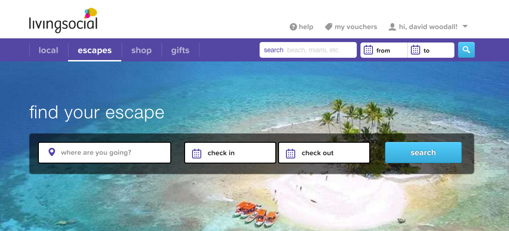
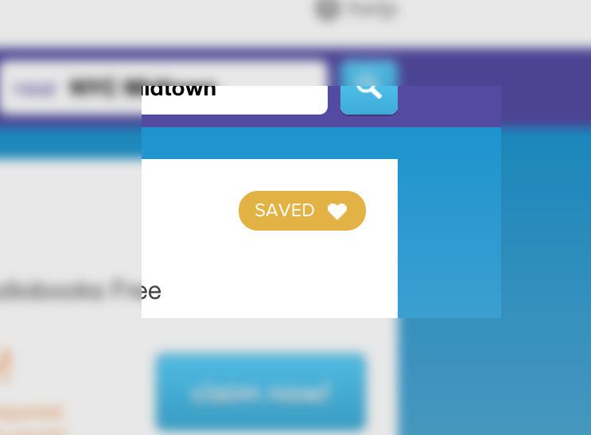

Services

Hello. I'm a web developer who can design pretty pictures & analyze the P & L
Jack of all trades with a Masters some
I've spent 20 years building a diversified career. I used to explain my eclectic combination of skills as a 'CEO in training'. Benjamin Franklin introduced me to the life of a Renaissance Man - a man of many interests.
The way I think of it is as three categories and their relationships known as corporate production of Art (systems), Business (profit), and Code (execution). My value add is as a translator between the separate, yet essential aspects of a modern day Enterprise.
Artful Systems
Art
+ Business
= Strategy
An exciting customer experience must be designed systematically. I take many plays out of e-myth, experience economy and a whole new mind to remain competitive in today's marketplace.
Profitable Business
Business
+ Code
= Profit
After my first business went insolvent I realized that ignoring accounting and finance in favor of sales and product design was not smart. This is when I decided to take the time and learn how to manage a sustainable business. I received a Masters in Finance andy applied my new education on a second business, which I sold in after four years and nearly $3M in sales with 3 employees. What we build must serve the customer's need to the end they are willing to pay enough that we make a positive net income on the transaction.
Clean Code
Code
+ Art
= Growth
Code must be presented in such a way that the user experience is so pleasant it creates raving fans who tell their friends about us. In 2007 I discovered basecamp. It's simplicity, effectiveness, and business model fascinated me. It was the first web app that made me realize the web did not die when the dot com bubble burst. I started joking with my friends around that time that "I've recently come to the conclusion that the Internet was here to stay". Meaning, I knew how to consume the web but I didn't know how to produce it. Since 2009 I've learned what is actually possible.
$295 hour
I am currently available for 5 - 10 hours a week at $295 hour or full-time
(Boulder, Greenville SC, or Remote)
as a Javascript & Rails Developer.
contact
- dave@woodalls.me
- 303.416.7032
- Boulder, CO
Resume
Capable of designing, coding, and implementing proposed plans
o
Web Developer Feb 2014 - Present
FakeFarm
fake farm is a digital playground to record my practice as a developer, designer, and father. The site is a collection of random pet projects in a blog format.

Web Design & Development March 2013 - Jan 2014
hireDave, LLC
Web strategy, design, and development employing such technologies as Ruby on Rails, HTML, CSS, JQuery, JavaScript, Angular, Adobe Photoshop. Projects include work for the following clients;
- Marshill.com
- 3rdRevolution.com
- InvitedHome.com
- SuppFinder.com
- LoganStreetCapital.com
- BrandFolder.com

Web Developer November 2012 - March 2013
Factory Design Labs
Ruby on rails development guided by great mentors like @mikePack, @JesseTrimble, and @Tony

Intern Sep 2012 - Nov 2012
Pivotal Labs
fake farm is a digital playground to record my practice as a developer, designer, and father. The site is a collection of random pet projects in a blog format.
Co-Founder & CEO Apr 2008 - Jul 2012
AMB3R custom t-shirts
AMB3R was the second clothing company I started. I wanted to focus on the subjects that caused my first company to go out of business. Specifically, Finance and Operations. Before selling my equity, we achieved $1M in annual sales managed by systems I developed that enabled me to sell without any service interruption.

Art Director March 2009 - October 2011
Ouray Sportswear
Part of new management team to turnaround bankrupt company and win South Denver’s 2011 Small Business of the Year award. Applied an analytical approach to the creative process which included ongoing trend and market analysis. Developed lean systems for the creative team to meet aggressive deadlines which lead to a company wide adoption of my techniques.
Education
M.S. Finance March 2009 - October 2011
University of Denver
I was doing things cool.
BS Communications - Advertising & PR March 2009 - October 2011
Liberty University
I was doing things cool.
Web Development Summer 2012
Starter League
I was doing things cool.
Ongoing EducationBooks, Videos, Blogs, Projects
As an INTJ I am an avid learner. I am constantly looking for new things to master which probably explains why I have such an eclectic career. I have enjoyed each of the separate parts of an organization but more so to gain the experience to run my own successful enterprise when the time is right.
About me

I'm glad not to be a kid anymore
Youth was an amazing experience but had it's downsides like trying to make something of myself and the delusion of self-sufficiency. But time, trials, and failure helped me see that life is to be lived by following God instead of chasing temporal health and wealth.
HTML is the New English
Before coding full time, I spent 17 years in small business sales & marketing experience, including 3 turnarounds, founding 2 companies, selling one, and now realize that Art Director was my favorite past job before coding. I'm formally trained with a Masters in Finance. Yes, it's been an adventure!
I like to describe the web as a new country called InternetLand. Consider how difficult it is for people who don't know English in America. In InternetLand, HTML is the new English. I wanted to join that new economy without being bound to a translator because there is more opportunity in InternetLand than in America.

Hobbies
Not to small or big. Just Write.
I've recently started writing again on medium. I took a break from platforms because I was trying to build my own blogging platform for practice. The problem with that approach is I was always coding rather that writing. So, I've decided to start again and just see what happens.
dave woodallEat. Sleep. Code.
I've been coding for 5 years now. It's the biggest subject I've ever undertaken to learn so it's a hobby as much as it's a profession. After the thousands of hours I've invested I still only feel like I'm in the shallow end. But I love it!
Stats
- Frontend: HTML/SLIM, CSS/SCSS, JavaScript/Coffee
- Backend: Ruby, Ruby on Rails, Middleman
- Tools: Bash, Git, Sublime Text, HTTP, Heroku
- Tinkering: AngularJS, BackBoneJS, Node / Express
Home Movies
I enjoy poking around with iMovie and GarageBand but I don't have enough storage to keep those videos so I post them on youtube. Here are a few examples
Select Albums

June 2015 in San Diego

June 2013 at the Sand Dunes
Various designed things.

Animation practice. Bad dog!

product line design and development

improving the customer experience
They used to call me all business dave
Back in college I used to gather some friends together for various group activities such as eating contests, book clubs, big idea thinking, and music recommentions.
sortpop, my latest club
I've recently started a new one on Slack that gathers all the best designers, developers, inventors, entrepreneurs, managers, and all around hustlers into a single team. It's pretty epic.
I have all kinds of pet projects so I'll just list them here for later.
- board game - cat math do
- card game - animores
- binka brew - soup shop idea
- link list
- proverbs
- hashpage
- fake farm
- lettuce books
Software Engineer Jan 2014 - Present
livingSocial
I've had the privilege to work on three entirely different teams. I was hired to handle some frontend work since my Rails skills. I was honest that I was really weak in two areas; javascript and TDD. I interviewed with @dhassler and @timschmelmer. Tim gave me a Russ Olsen Design Pattern quiz which, since I read the book, I told him I knew the answer. Had I not read the book, I would have been lost. But those guys were great and helped me learn a ton.
Escapes: Retail Vertical
Most of my work was frontend on Rails: HTML, ERB, Partials, CSS, and JavaScript.
Personalization: Data Science & UI
This was a very awkward position because it was opperating in Data Science on a Gem. We weren't even in Rails so I had to orient myself with code that had no familiar acheitechutre. ON top of that, Data Sciene use the words test, engine, model in very different ways. As part of this time I founded an Angular Club to try to apply what I was learning from some exploratory work we were doing. I was able to volunteer for Angular because Doug Ramsey called for ANgular's establishment in the LS eco system. That was before the 2.0 debacle. I had also invested about 1,000 hours with @cjgrimes on Angular so I figured I had to know more than the total beginners. That's when I met Eldar, Shauna, and Ian. Those guys are A+ talent and should be treated as such.
Urgency
we used this to entice people 10%. Much of my work on this project was in JavasScipt debugging and QA testing.
Daily Gem
Yes, we actually hired Robin Leach for this. At the end of the experiment, we realized that people will buy more if the price is cheaper. The experiment was a success.
Save For Later
The idea of save for later was to let people browse and save deals for later. It worked well on mobile but didn't translate to Desktop. This is a project that had nobody in the role because the lead Front End developer left. So, I volunteered and was way in over my head. Thanks to @shaun for bailing me out!
Internal Tools: Customer Service
Working in a tech company can make one forget that there are actual people being serviced from all the code we write. Working on internal tools, specifically for customer service reps means I get to learn first hand what our customer problems are and attempting to come up with solutions to empower customer service reps with the ability to create happy customer experiences.
Volunteer work
In addition to helping with the code base, I was an active member of the following:
Conclusion
Working with three different pilots and then speaking with our Business to Consumer customers gave me perspectives on what entices a customer but also how to solve buyer remorse. Some examples of lessons include: Broad understanding of what it takes to work on a massive code base, Increased understanding of micro services, Managing multiple apps at the same time, and a production level design work flows.